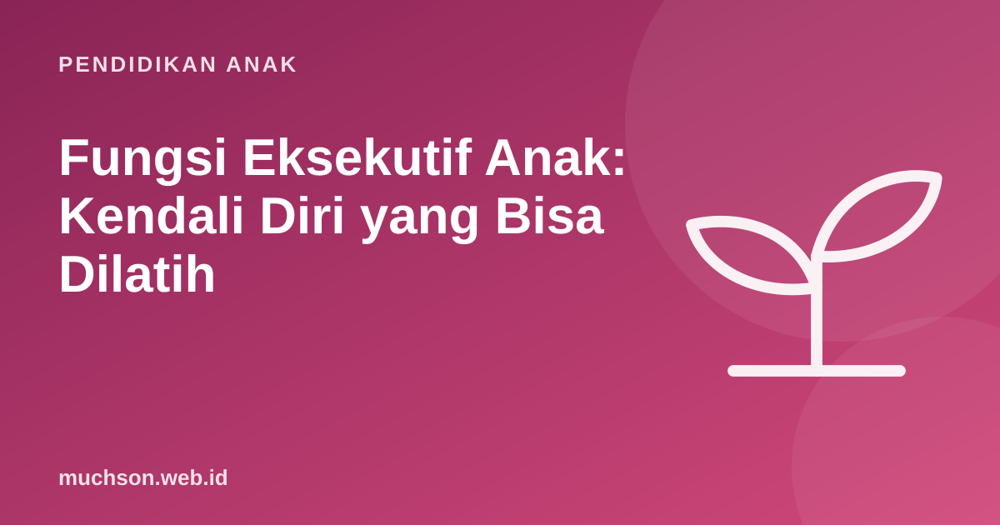

Beranda › Artikel › Pendidikan Anak
Pendidikan AnakFungsi Eksekutif Anak: Kendali Diri yang Bisa Dilatih
Kenapa ada anak yang bisa mengingat tiga instruksi sekaligus, menunggu giliran dengan sabar, dan beralih rencana saat keadaan berubah, sementara anak lain kesulitan? Jawabannya sering terletak pada fungsi eksekutif. Kabar baiknya, kemampuan ini bukan bakat tetap. Ia berkembang dan bisa dilatih lewat kegiatan sehari-hari.

Apa itu fungsi eksekutif?
Center on the Developing Child di Harvard University menggambarkan fungsi eksekutif seperti sistem pengatur lalu lintas di bandara: otak harus mengelola banyak informasi, memprioritaskan, menahan yang tidak penting, dan menyesuaikan rencana. Ada tiga komponen inti:
| Komponen | Artinya | Contoh pada anak |
|---|---|---|
| Memori kerja | Menyimpan dan mengolah informasi dalam pikiran sesaat | Mengingat instruksi "ambil tas, pakai sepatu, tunggu di depan" |
| Kendali diri (inhibitory control) | Menahan dorongan dan fokus meski ada gangguan | Tidak langsung menjawab sebelum soal selesai dibaca |
| Fleksibilitas berpikir | Beralih cara pandang atau strategi | Mencoba cara lain saat cara pertama tidak berhasil |
Kenapa penting?
Fungsi eksekutif berkaitan dengan kesiapan sekolah, kemampuan belajar, dan hubungan sosial. Diamond dan Lee (2011) di jurnal Science meninjau berbagai program dan menyimpulkan fungsi eksekutif anak usia 4-12 tahun bisa ditingkatkan, dan anak yang awalnya paling lemah sering mendapat manfaat terbesar. Mereka juga mencatat bahwa latihan perlu terus menantang dan dilakukan berulang, dan bahwa kegiatan seperti permainan, seni, dan olahraga yang dirancang baik bisa ikut melatihnya.
Perkembangan sesuai usia
Karena fungsi eksekutif terus berkembang sampai dewasa muda, wajar bila anak SD masih butuh bantuan mengatur jadwal, mengingat tugas, dan mengelola emosi. Bantuan yang dikurangi bertahap adalah cara terbaik melatihnya.
Latihan lewat permainan sehari-hari
Dukungan di rumah
- Rutinitas yang dapat diprediksi mengurangi beban memori kerja anak.
- Daftar periksa bergambar untuk pagi hari atau persiapan sekolah.
- Instruksi pendek, satu atau dua langkah sekaligus untuk anak kecil.
- Beri waktu transisi, misalnya "lima menit lagi kita berangkat".
- Tidur dan gerak cukup, keduanya berpengaruh besar pada fungsi eksekutif.
- Kurangi bantuan bertahap seiring anak makin mampu.
Kegiatan yang menantang, menyenangkan, dan diulang adalah kunci melatih fungsi eksekutif. Coding memenuhi ketiganya: setiap level menuntut perencanaan, menahan diri, dan berganti strategi. Anak bisa mencobanya lewat latihan Robo gratis di PixelKode.
Tanya jawab
Apa itu fungsi eksekutif pada anak?
Apakah fungsi eksekutif bisa dilatih?
Permainan apa yang melatih fungsi eksekutif?
Kapan fungsi eksekutif matang?
Sumber dan bacaan lanjut
- Harvard Center on the Developing Child: Executive Function & Self-Regulation
- Diamond, A., & Lee, K. (2011). Interventions shown to aid executive function development in children 4 to 12 years old. Science
- Paruthi, S. dkk. (2016). Rekomendasi jumlah tidur anak